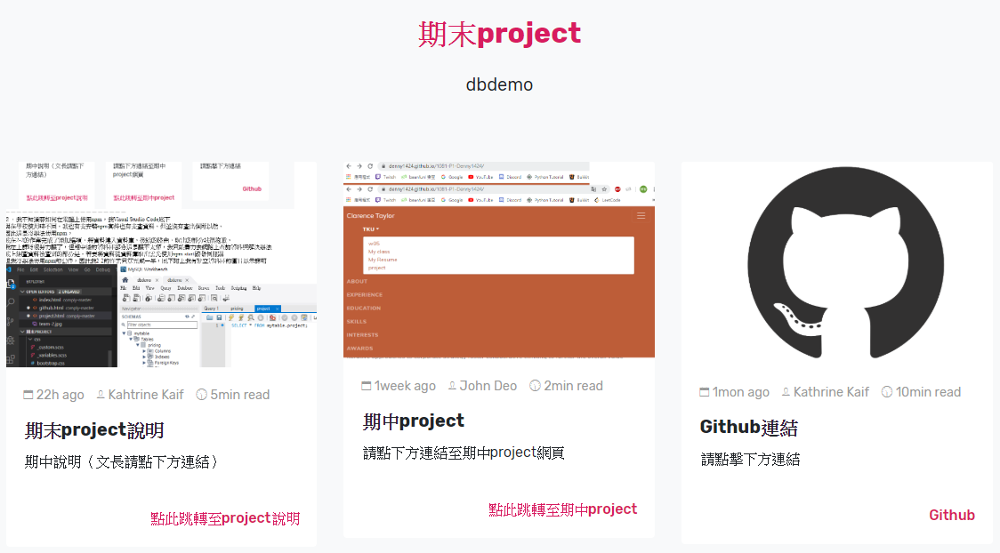
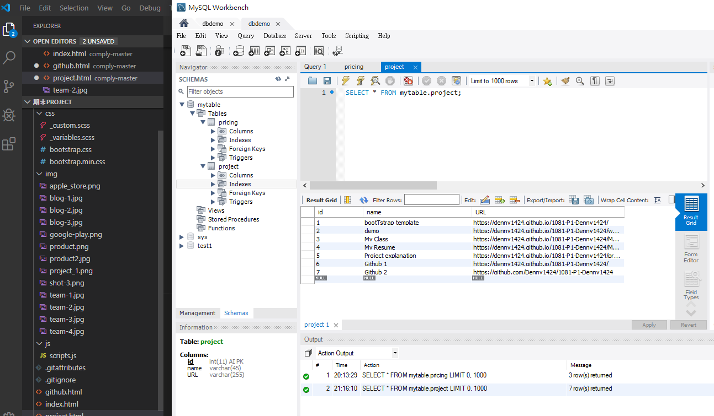
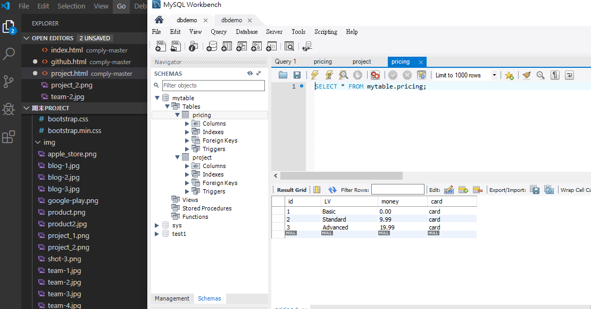

2-1
這次的期末project我完成了1、2-1、2-2(一半)、2-3(一半)、3、4
在製作期末project時我遇到了許多問題，在過程中我會盡量去查資料上網自學
希望自己的期末project能以完整的型態交付出去
遇到的問題例如
－－－－－－－－－－－－－－－－－－－－－
１．我在課堂上選擇的bootstrap template 無法在最上面新增下拉列表
，點擊TKU都只會跳轉至網頁最上方而無法出現下拉選單，過程中我檢查了
程式碼中的各項內容依然無法解決此問題，因此我決定用另一種方式呈現
選單的部分，我套用了原bootstrap中的一段網頁，將其改造為自己所需
的內容，達成以另一種方式呈現選單之目的，此外在套用時我除了修改文字
也修改了內部的連結，使的點擊裡面的內容可以跳轉至我所需要的頁面，
史的最終能達成此兼具美觀與實用性的類選單。

－－－－－－－－－－－－－－－－－－－－－
２．我不知道要如何在電腦上使用npm，我Visual Studio Code底下
與在學校使用時不同，我也有去安裝npm套件也有去查資料，但並沒有查出個所以然，
因此還是沒辦法使用npm，
我在2-2的作業完成了添加選項、將資料建入資料庫，後續的路由、取出的部分我很抱歉，
我期中後的資料庫部分聽不太懂，只能盡力去網路上查詢資料與解決辦法
我上網查資料後查到的部分是，若要將資料從資料庫取出需先使用npm start啟動伺服器
但我沒辦法使用npm的套件，因此我2-2的作業只算完成一半，底下附上我有建立資料庫的圖片以示證明

－－－－－－－－－－－－－－－－－－－－－
３．我2-3的作業同2-2，因為npm的部分，因此不知該如何路由並取出資料庫中的內容
底下一樣附上我有建資料庫的圖片以示證明

－－－－－－－－－－－－－－－－－－－－－－－－－－－－－
４．想對教授說的一些話
拜託不要當我QQ，我很抱歉我期中考沒有到，但我真的花了很多心力在這堂課上，
除了上課認真聽講以外，我還會上網查資料自行學習，甚至若當周課程再聽不懂一點，
我將教授您示範的內容錄下回家複習，只為了能聽懂上課的內容增加自己的底子，
以彌補自己耍白癡期中考沒考的疏失。
以下是一些我上這堂課的心路歷程，您可能會覺得我這些都是聽不懂、不認真的藉口
但儘管如此我還是希望我能以一個學生的立場，給教授您一些微不足道的建議
我認為這堂課對第一次接觸程式語言的人來說真的很難，在期中前我每堂課都到並且專心聽
很努力的讓自己保持在聽得懂80%的狀態，但期中後的第一堂課我被迫去聽演講無法聽課
接著第二個禮拜到來時就發現完全聽不懂上課在講甚麼了...
雖然我在之後的每堂課也都有出席並且專心聽講，但我還是有很多不明白的地方，
無法像期中一樣保持聽得懂80%，頂多只能聽懂一半。
教授我感覺得出您教這堂課真的教得很認真，還多花時間辦模擬考就為了讓我們聽懂，
但儘管如此，教課的速度我認為還是有點過快了... 除了我以外應該其他人也這麼認為，
我上課時偶爾會問身旁的人問題，但大部分也都是一問三不知
另外還有一點是，教授您教學與示範時會開螢幕廣播讓大家能看到要如何操作
但我建議開螢幕廣播時不要開強制搶走電腦的，應該開有一個小視窗的那種
讓我們在聽講時也能自己示範一次，或是如果再教已經懂得部分，可以把視窗拉到旁邊
先自行遇習後面的部分或是自己測試、修改程式碼，有時候常常做東西做到一半
螢幕就被搶走講下一個部分，偶爾會造成一個上課時的惡性循環
上一個部份還沒做完→被搶螢幕講下一個部分→螢幕回來→先做完上一個部分→被搶螢幕講下個部分 loop
我認為開一個小視窗的方式，能讓我們在聽的同時又能做沒做完的部分
讓跟得上進度想自己測試程式碼的同學，與稍微做不完的同學都能一邊聽講
一邊做自己該做的事情。